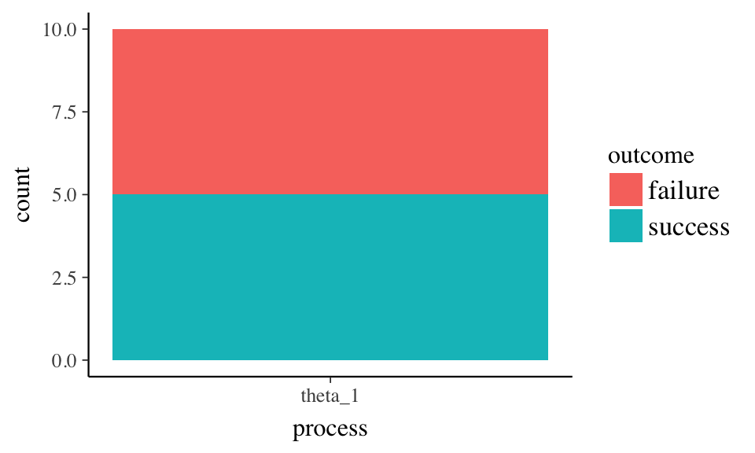
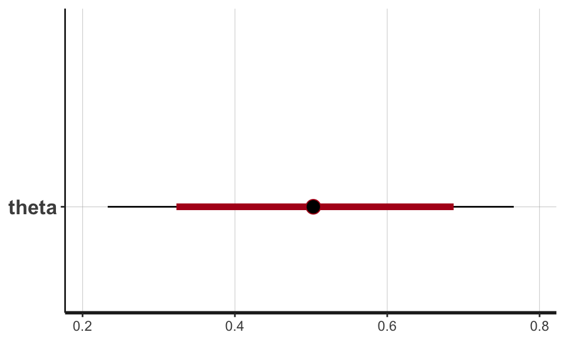
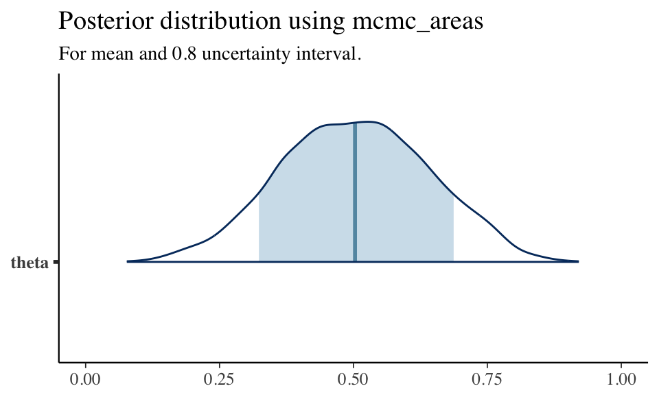

Independent observations with two possible outcomes on a trial.
Simulate a data set data with k successes in n trials. Start with 10 trials and a success rate of 50%.
The data contains a single process with observations and a descriptive outcome label. One observation per row.
## # A tibble: 10 x 3
## process obs outcome
## <chr> <dbl> <chr>
## 1 theta_1 1 success
## 2 theta_1 0 failure
## 3 theta_1 1 success
## 4 theta_1 0 failure
## 5 theta_1 1 success
## 6 theta_1 1 success
## 7 theta_1 0 failure
## 8 theta_1 1 success
## 9 theta_1 0 failure
## 10 theta_1 0 failureUse class(data) to learn the class of the r object.
## [1] "tbl_df" "tbl" "data.frame"Use ggplot to generate a data graph showing successes, failures, and total observations. 
Stan needs summarized data ( k successes in n trials) in a list. Create the list stan_data.
## $n
## [1] 10
##
## $k
## [1] 5Use class(stan_data) to learn the class of the r object.
## [1] "list"A graphical representation of the model shows:
The vector’s arrow shows dependency. Successes are dependent on both the underlying process \(\theta\) and the number of observations.
The assumption for \(\theta\) is that all possible rates are equally likely. The Beta distribution is set with 1 “success” and 1 “failure”.
The assumption of k is that the outcomes are from a Binomial distribution with \(\theta\) determining the rate for n observations.
The Stan model follows from the graphical model. The data block names n and k and sets lower boundaries. The parameters block names \(\theta\) and sets upper and lower boundaries. The model block sets the prior distribution for \(\theta\) and the model for k.
## data {
## int<lower=1> n; // at least one observation
## int<lower=0> k; // success count can not be negative
## }
##
## parameters {
## real<lower=0, upper=1> theta; // bounded by 0 and 1
## }
##
## model {
## //Prior Distribution for Rate Theta
## theta ~ beta(1, 1);
##
## // Observed Counts
## // k has a binomial distribution of n observations
## // with theta variation
## k ~ binomial(n, theta);
##
## }“Run Stan with default settings and see what happens.”
(Andrew Gelman said this and I’m taking him at his word!)
Look at the object generated with class(samples_default). The S4 object contains lots of information beyond the model results.
## [1] "stanfit"
## attr(,"package")
## [1] "rstan"And, simply running basic commands against the Stan object will produce reports and graphs specific to the class.
A summary table:
## Inference for Stan model: binomial_one_rate.
## 4 chains, each with iter=2000; warmup=1000; thin=1;
## post-warmup draws per chain=1000, total post-warmup draws=4000.
##
## mean se_mean sd 2.5% 25% 50% 75% 97.5% n_eff Rhat
## theta 0.50 0.00 0.14 0.23 0.41 0.50 0.60 0.77 1481 1
## lp__ -8.84 0.02 0.75 -10.97 -9.00 -8.55 -8.37 -8.32 1686 1
##
## Samples were drawn using NUTS(diag_e) at Fri Dec 8 21:01:42 2017.
## For each parameter, n_eff is a crude measure of effective sample size,
## and Rhat is the potential scale reduction factor on split chains (at
## convergence, Rhat=1).A plot of \(\theta\)
## ci_level: 0.8 (80% intervals)## outer_level: 0.95 (95% intervals)
And a better plot of \(\theta\) 
Copyright © 2017 OBrien Consulting - All rights reserved.